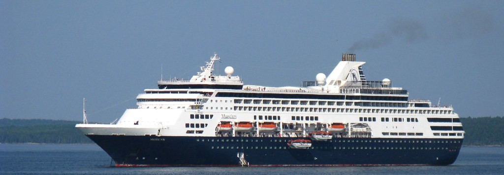
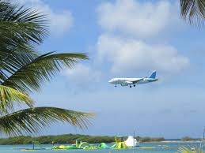

Arrival
Air Travel
Taniti is served by a small airport that can accommodate small jets and planes. Taniti is in the process of expanding the airport so larger jets can land in the next few years.

Cruise Ship
Almost all visitors arrive by air, though some arrive on a small cruise ship that docks for one night per week.
Local Transport
Busses & Taxis
Public buses serve Taniti City and run from 5 a.m. to 11 p.m. every day. Private buses serve the rest of the island. Taxis are available in Taniti City.
Rental Cars & Bikes
Rental cars can be rented from a local rental agency near the airport. Bikes and helmets are available to rent from several vendors (helmets are required by law). Taniti City is fairly flat and very walkable. Many tourists stay in the area surrounding Merriton Landing: this area is easy to explore on foot.